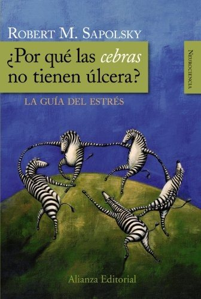

Libros de sueño, estrés y bienestar
Libros de sueño, estrés y bienestar en español: 54 libros completos para leer gratis aquí mismo y 19 fichas de títulos actuales.
Estrés psicológicoEstrés crónicoEstrés laboralBurnoutCalidad de vidaInsomnioBienestar subjetivoAfrontamiento del estrésAutocompasiónRecuperación psicológicaPsicología positivaMindfulnessFelicidadSatisfacción vitalPrevención del malestar psicológicoPsicología del sueñoRitmos circadianosRespuesta de lucha o huidaOptimismoGratitudSueño y memoriaSueño y regulación emocional
Estrés crónico, salud mental y perfiles emocionales en adolescentes : evidencia aplicada e insumos para políticas públicas en el Uruguay post COVID-19Brunet, Nicolás; Tórtora, Giuliana; Piñeiro, Mercedes; Sánchez, Fernanda; Agüero Michelin Salomón, Patricia; Borgarello, Luciana; Funcasta Duce, Lorena; Gotero, Agustina; Krul, Nadia
Estrés crónico, salud mental y perfiles emocionales en adolescentes : evidencia aplicada e insumos para políticas públicas en el Uruguay post COVID-19Brunet, Nicolás; Tórtora, Giuliana; Piñeiro, Mercedes; Sánchez, Fernanda; Agüero Michelin Salomón, Patricia; Borgarello, Luciana; Funcasta Duce, Lorena; Gotero, Agustina; Krul, NadiaDecálogo para el profesorado. Claves para ayudar a tus estudiantes en la gestión de sus niveles de estrés académicoDíez López, Marta; García Moya, Irene; Paniagua Infantes, Carmen Elisa; Jiménez Iglesias, Antonia María; Villegas Martínez, Flora; Jiménez Álvarez, Ana
Decálogo para el profesorado. Claves para ayudar a tus estudiantes en la gestión de sus niveles de estrés académicoDíez López, Marta; García Moya, Irene; Paniagua Infantes, Carmen Elisa; Jiménez Iglesias, Antonia María; Villegas Martínez, Flora; Jiménez Álvarez, AnaDecálogo para las estudiantes. Claves para gestionar tus niveles de estrés académicoDíez López, Marta; García Moya, Irene; Paniagua Infantes, Carmen Elisa; Jiménez Iglesias, Antonia María; Villegas Martínez, Flora; Jiménez Álvarez, Ana
Decálogo para las estudiantes. Claves para gestionar tus niveles de estrés académicoDíez López, Marta; García Moya, Irene; Paniagua Infantes, Carmen Elisa; Jiménez Iglesias, Antonia María; Villegas Martínez, Flora; Jiménez Álvarez, AnaDuelos migratorios y estrés aculturativo en la niñez y la adolescencia migrante. Un estudio etnográfico en Oaxaca, MéxicoRodríguez Cruz, Marta
Duelos migratorios y estrés aculturativo en la niñez y la adolescencia migrante. Un estudio etnográfico en Oaxaca, MéxicoRodríguez Cruz, MartaEl estrés académico en clave de géneroDíez López, Marta; García Moya, Irene; Paniagua Infantes, Carmen Elisa; Jiménez Iglesias, Antonia María; Villegas Martínez, Flora; Jiménez Álvarez, Ana
El estrés académico en clave de géneroDíez López, Marta; García Moya, Irene; Paniagua Infantes, Carmen Elisa; Jiménez Iglesias, Antonia María; Villegas Martínez, Flora; Jiménez Álvarez, AnaSalud Laboral-Consecuencias del estrés laboral y estrategias de IntervenciónGonzález-Anta, Baltasar
Salud Laboral-Consecuencias del estrés laboral y estrategias de IntervenciónGonzález-Anta, Baltasar¿Es normal el insomnio en los adolescentes? Abordaje del insomnio en el adolescenteOspina, Juan Manuel; Palacio Ortiz, Juan David
¿Es normal el insomnio en los adolescentes? Abordaje del insomnio en el adolescenteOspina, Juan Manuel; Palacio Ortiz, Juan DavidBienestar subjetivo a los 15 años y repetición de cursoBausela Herreras, Esperanza
Bienestar subjetivo a los 15 años y repetición de cursoBausela Herreras, EsperanzaDebates sobre psicopatología, estructuras clínicas y conexiones. Vol. 4Escobar Puche, Alexandra; Gallego Buriticá, Andrés Felipe; Guerrero Bravo, Carlos Andrés; Roldán Cardona, Carolina María; Osorio Cossio, Hérmes; Atxa Estalalayo, June; Vargas García, Kelly Yohana; Ceb
Debates sobre psicopatología, estructuras clínicas y conexiones. Vol. 4Escobar Puche, Alexandra; Gallego Buriticá, Andrés Felipe; Guerrero Bravo, Carlos Andrés; Roldán Cardona, Carolina María; Osorio Cossio, Hérmes; Atxa Estalalayo, June; Vargas García, Kelly Yohana; CebUna educación inclusiva y de calidad: ideas y estrategias para seguir avanzandoMartín Lozano, Isabel; Sánchez García, Ana Belén
Una educación inclusiva y de calidad: ideas y estrategias para seguir avanzandoMartín Lozano, Isabel; Sánchez García, Ana BelénAutoayuda Plus (AAyuda+). Curso grupal de manejo del estrés para personas adultas. Versión genérica de ensayo 1.0, 2021
Autoayuda Plus (AAyuda+). Curso grupal de manejo del estrés para personas adultas. Versión genérica de ensayo 1.0, 2021Debates sobre psicopatología y estructuras clínicas. Vol. 2Gómez Vargas, Maricelly; Heredia Quintana, Diego Armando; Franco Amaris, Laura Isabel; Betancur Jaramillo, Alejandra; Vargas García, Kelly Johana; Chacón Afanador, Jorge Enrique; Restrepo Zuleta, Edwi
Debates sobre psicopatología y estructuras clínicas. Vol. 2Gómez Vargas, Maricelly; Heredia Quintana, Diego Armando; Franco Amaris, Laura Isabel; Betancur Jaramillo, Alejandra; Vargas García, Kelly Johana; Chacón Afanador, Jorge Enrique; Restrepo Zuleta, EdwiManual para el entrenamiento y apoyo de cuidadores de personas con demencia (iSupport)Organización Mundial de la Salud
Manual para el entrenamiento y apoyo de cuidadores de personas con demencia (iSupport)Organización Mundial de la SaludPrácticas de recuperación para la salud mental y el bienestarOrganización Mundial de la Salud
Prácticas de recuperación para la salud mental y el bienestarOrganización Mundial de la SaludEnvejecimiento, actividad física y desarrollo emocionalOlga Bruna, Isabel Carrera Blancafort, Mercè Gimeno-Santos y otros
Envejecimiento, actividad física y desarrollo emocionalOlga Bruna, Isabel Carrera Blancafort, Mercè Gimeno-Santos y otrosPrograma de promoción de la Salud Mental Positiva para adultos (Mentis Plus+): manual de apoyoTeixeira, Sonia; Sequeira, Carlos; Lluch Canut, Ma. Teresa
Programa de promoción de la Salud Mental Positiva para adultos (Mentis Plus+): manual de apoyoTeixeira, Sonia; Sequeira, Carlos; Lluch Canut, Ma. TeresaPrograma para la promoción de parentalidad positiva en familias refugiadasJiménez García, Lucía; Hidalgo García, María Victoria; Nogales Groiss, Irina; Baena Medina, Magdalena Sofía; Maya Segura, Jesús Manuel
Programa para la promoción de parentalidad positiva en familias refugiadasJiménez García, Lucía; Hidalgo García, María Victoria; Nogales Groiss, Irina; Baena Medina, Magdalena Sofía; Maya Segura, Jesús ManuelDebates sobre psicopatología y estructuras clínicas. Vol. 1Garcés Giraldo, Paula Andrea; Tamayo Lopera, Daniela; Galeano Arias, Felipe; Gómez Vargas, Maricelly; Marín Valencia, Alejandro; Hoyos Arcila, Kelly J.; Jiménez Marín, Eliana Gisell
Debates sobre psicopatología y estructuras clínicas. Vol. 1Garcés Giraldo, Paula Andrea; Tamayo Lopera, Daniela; Galeano Arias, Felipe; Gómez Vargas, Maricelly; Marín Valencia, Alejandro; Hoyos Arcila, Kelly J.; Jiménez Marín, Eliana GisellEn tiempos de estrés, haz lo que importa: una guía ilustradaOrganización Mundial de la Salud
En tiempos de estrés, haz lo que importa: una guía ilustradaOrganización Mundial de la SaludEscala CAVIDACE: evaluación de la calidad de vida de personas con daño cerebral. AutoinformeVerdugo Alonso, Miguel Ángel; Aza Hernández, Alba; Orgaz Baz, María Begoña; Fernández Sánchez, María; Gómez Sánchez, Laura E.; Amor González, Antonio Manuel
Escala CAVIDACE: evaluación de la calidad de vida de personas con daño cerebral. AutoinformeVerdugo Alonso, Miguel Ángel; Aza Hernández, Alba; Orgaz Baz, María Begoña; Fernández Sánchez, María; Gómez Sánchez, Laura E.; Amor González, Antonio ManuelEstrategias de innovación para el apoyo social de las familias. Voluntariado, mentoría y e-parentingBalsells, M. Àngels; Vaquero Tió, Eduard; Fernández-Rodrigo, Laura; Fuentes-Peláez, Núria; Mateos Inchaurrondo, Ainoa
Estrategias de innovación para el apoyo social de las familias. Voluntariado, mentoría y e-parentingBalsells, M. Àngels; Vaquero Tió, Eduard; Fernández-Rodrigo, Laura; Fuentes-Peláez, Núria; Mateos Inchaurrondo, AinoaIntervención breve basada en psicología positiva para potenciar la resiliencia ante la adversidad. Guía para el profesionalSerrano-Zárate, Berenice; De la Rosa Gómez, Anabel
Intervención breve basada en psicología positiva para potenciar la resiliencia ante la adversidad. Guía para el profesionalSerrano-Zárate, Berenice; De la Rosa Gómez, AnabelEscala KidsLife-Down: evaluación de la calidad de vida de niños y adolescentes con síndrome de DownGómez Sánchez, Laura E.; Verdugo Alonso, Miguel Ángel; Rodríguez Crespo, María Mar; Arias González, Victor Benito; Morán Suárez, Lucía; Arias Martínez, Benito; Alcedo Rodríguez, María Ángeles; Monsalv
Escala KidsLife-Down: evaluación de la calidad de vida de niños y adolescentes con síndrome de DownGómez Sánchez, Laura E.; Verdugo Alonso, Miguel Ángel; Rodríguez Crespo, María Mar; Arias González, Victor Benito; Morán Suárez, Lucía; Arias Martínez, Benito; Alcedo Rodríguez, María Ángeles; MonsalvVersión colombiana de la Escala INICO-FEAPS para la evaluación de la calidad de vida en personas con discapacidad intelectualHenao Lema, Claudia Patricia; Verdugo Alonso, Miguel Ángel; Córdoba Andrade, Leonor
Versión colombiana de la Escala INICO-FEAPS para la evaluación de la calidad de vida en personas con discapacidad intelectualHenao Lema, Claudia Patricia; Verdugo Alonso, Miguel Ángel; Córdoba Andrade, LeonorEl bienestar emocionalMireia Cabero Jounou
El bienestar emocionalMireia Cabero JounouEscala KidsLife: evaluación de la calidad de vida de niños y adolescentes con discapacidad intelectualGómez Sánchez, Laura E.; Verdugo Alonso, Miguel Ángel; Arias Martínez, Benito; Arias González, Victor Benito; Alcedo Rodríguez, María Ángeles; Fontanil, Yolanda; Monsalve, A.; Morán Suárez, Lucía
Escala KidsLife: evaluación de la calidad de vida de niños y adolescentes con discapacidad intelectualGómez Sánchez, Laura E.; Verdugo Alonso, Miguel Ángel; Arias Martínez, Benito; Arias González, Victor Benito; Alcedo Rodríguez, María Ángeles; Fontanil, Yolanda; Monsalve, A.; Morán Suárez, LucíaLa gran felicidad de no pensar en nada. William James y el retorno a la experienciaRossi, Paula
La gran felicidad de no pensar en nada. William James y el retorno a la experienciaRossi, PaulaPromoción de la parentalidad positiva durante la preparación al nacimiento y la crianzaPalacios González, Jesús; Moreno Rodríguez, María del Carmen; Oliva Delgado, Alfredo; Román Rodríguez, Maite; Antolín Suárez, Lucía; Estévez Campos, Rosa Mª; Pascual García, Diana Mª
Promoción de la parentalidad positiva durante la preparación al nacimiento y la crianzaPalacios González, Jesús; Moreno Rodríguez, María del Carmen; Oliva Delgado, Alfredo; Román Rodríguez, Maite; Antolín Suárez, Lucía; Estévez Campos, Rosa Mª; Pascual García, Diana MªPsicoanálisis, semiótica y lingüística : una alianza conveniente para el estudio de los sueñosVinocur Fischbein, Susana
Psicoanálisis, semiótica y lingüística : una alianza conveniente para el estudio de los sueñosVinocur Fischbein, SusanaAplicación del paradigma de calidad de vida a la intervención con personas con discapacidad desde una perspectiva integralVerdugo Alonso, Miguel Ángel; Canal Bedia, Ricardo; Jenaro Río, Cristina; Badia Corbella, Marta; Aguado Díaz, Antonio-León
Aplicación del paradigma de calidad de vida a la intervención con personas con discapacidad desde una perspectiva integralVerdugo Alonso, Miguel Ángel; Canal Bedia, Ricardo; Jenaro Río, Cristina; Badia Corbella, Marta; Aguado Díaz, Antonio-LeónEscala de calidad de vida familiar: manual de aplicaciónVerdugo Alonso, Miguel Ángel; Rodríguez Aguilella, Alba; Sainz Modinos, Fabián
Escala de calidad de vida familiar: manual de aplicaciónVerdugo Alonso, Miguel Ángel; Rodríguez Aguilella, Alba; Sainz Modinos, FabiánPropuestas para la promoción del desarrollo positivo adolescenteOliva Delgado, Alfredo; Pertegal Vega, Miguel Ángel; Antolín Suárez, Lucía; Reina Flores, María del Carmen; Parra Jiménez, Águeda; Hernando Gómez, Ángel; Pascual García, Diana Mª; Estévez Campos, Rosa
Propuestas para la promoción del desarrollo positivo adolescenteOliva Delgado, Alfredo; Pertegal Vega, Miguel Ángel; Antolín Suárez, Lucía; Reina Flores, María del Carmen; Parra Jiménez, Águeda; Hernando Gómez, Ángel; Pascual García, Diana Mª; Estévez Campos, RosaActivos para el desarrollo positivo y la salud mental en la adolescenciaOliva Delgado, Alfredo; Reina Flores, María del Carmen; Hernando Gómez, Ángel; Antolín Suárez, Lucía; Pertegal Vega, Miguel Ángel; Parra Jiménez, Águeda; Ríos Bermúdez, Moisés; Estévez Campos, Rosa Mª
Activos para el desarrollo positivo y la salud mental en la adolescenciaOliva Delgado, Alfredo; Reina Flores, María del Carmen; Hernando Gómez, Ángel; Antolín Suárez, Lucía; Pertegal Vega, Miguel Ángel; Parra Jiménez, Águeda; Ríos Bermúdez, Moisés; Estévez Campos, Rosa MªDesarrollo positivo adolescente y los activos que lo promueven: Un estudio en centros docentes andalucesOliva Delgado, Alfredo; Pertegal Vega, Miguel Ángel; Antolín Suárez, Lucía; Reina Flores, María del Carmen; Ríos Bermúdez, Moisés; Hernando Gómez, Ángel; Parra Jiménez, Águeda; Pascual García, Diana M
Desarrollo positivo adolescente y los activos que lo promueven: Un estudio en centros docentes andalucesOliva Delgado, Alfredo; Pertegal Vega, Miguel Ángel; Antolín Suárez, Lucía; Reina Flores, María del Carmen; Ríos Bermúdez, Moisés; Hernando Gómez, Ángel; Parra Jiménez, Águeda; Pascual García, Diana MInstrumentos para la evaluación de la salud mental y el desarrollo positivo adolescente y los activos que lo promuevenOliva Delgado, Alfredo; Antolín Suárez, Lucía; Pertegal Vega, Miguel Ángel; Ríos Bermúdez, Moisés; Parra Jiménez, Águeda; Hernando Gómez, Ángel; Reina Flores, María del Carmen
Instrumentos para la evaluación de la salud mental y el desarrollo positivo adolescente y los activos que lo promuevenOliva Delgado, Alfredo; Antolín Suárez, Lucía; Pertegal Vega, Miguel Ángel; Ríos Bermúdez, Moisés; Parra Jiménez, Águeda; Hernando Gómez, Ángel; Reina Flores, María del CarmenLa promoción del desarrollo adolescente: Recursos y estrategias de intervenciónOliva Delgado, Alfredo; Hernando Gómez, Ángel; Parra Jiménez, Águeda; Pertegal Vega, Miguel Ángel; Ríos Bermúdez, Moisés; Antolín Suárez, Lucía
La promoción del desarrollo adolescente: Recursos y estrategias de intervenciónOliva Delgado, Alfredo; Hernando Gómez, Ángel; Parra Jiménez, Águeda; Pertegal Vega, Miguel Ángel; Ríos Bermúdez, Moisés; Antolín Suárez, Lucía¿Es la satisfacción de deseos la esencia de los sueños? Origen y función de los sueñosRuda, Lourdes
¿Es la satisfacción de deseos la esencia de los sueños? Origen y función de los sueñosRuda, LourdesPrograma de habilidades de la vida diaria para la mejora de la conducta autodeterminada en personas con enfermedad mental grave y prolongadaVerdugo Alonso, Miguel Ángel
Programa de habilidades de la vida diaria para la mejora de la conducta autodeterminada en personas con enfermedad mental grave y prolongadaVerdugo Alonso, Miguel ÁngelEventos estresores del ciclo vital y percepción del proceso adoptivoQuiroz Neira, Mario Hernán
Eventos estresores del ciclo vital y percepción del proceso adoptivoQuiroz Neira, Mario HernánEstructura del mensaje y psicología del receptorLabio-Bernal, Aurora
Estructura del mensaje y psicología del receptorLabio-Bernal, AuroraSabiduría, melancolía y felicidad. Consideraciones entorno a una fisiología de la moral aristotélicaTorres Bisetti, David
Sabiduría, melancolía y felicidad. Consideraciones entorno a una fisiología de la moral aristotélicaTorres Bisetti, DavidLas relaciones, fuente de estrésLeón Rubio, José María
Las relaciones, fuente de estrésLeón Rubio, José MaríaCUIDAR A QUIENES CUIDAN Investigación-acción y estrategias de resiliencia en servicios socialesAmezcua Aguilar, Teresa; Cortés Moreno, Javier; Rodríguez Martínez, Antonia
CUIDAR A QUIENES CUIDAN Investigación-acción y estrategias de resiliencia en servicios socialesAmezcua Aguilar, Teresa; Cortés Moreno, Javier; Rodríguez Martínez, AntoniaFormación competencial docente: estrategias de la neurodidáctica desde el enfoque de la Psicología PositivaVentura Campos, Mercedes
Formación competencial docente: estrategias de la neurodidáctica desde el enfoque de la Psicología PositivaVentura Campos, MercedesPrograma de terapia asistida con animales para la promoción de la salud mental positivaBalaguer, Judith; Moreno Arroyo, M. Carmen; Lluch Canut, Ma. Teresa; Ristol Ubach, Francesc; Puig Llobet, Montserrat
Programa de terapia asistida con animales para la promoción de la salud mental positivaBalaguer, Judith; Moreno Arroyo, M. Carmen; Lluch Canut, Ma. Teresa; Ristol Ubach, Francesc; Puig Llobet, MontserratEscala KidsLife-TEA: Evaluación de la calidad de vida de niños y adolescentes con trastorno del espectro del autismo y discapacidad intelectualGómez Sánchez, Laura E.; Morán Suárez, Lucía; Alcedo Rodríguez, María Ángeles; Verdugo Alonso, Miguel Ángel; Arias González, Victor Benito; Fontanil, Yolanda; Monsalve, A.
Escala KidsLife-TEA: Evaluación de la calidad de vida de niños y adolescentes con trastorno del espectro del autismo y discapacidad intelectualGómez Sánchez, Laura E.; Morán Suárez, Lucía; Alcedo Rodríguez, María Ángeles; Verdugo Alonso, Miguel Ángel; Arias González, Victor Benito; Fontanil, Yolanda; Monsalve, A.Construyendo estrategias de promoción de la salud mental y prevención de los trastornos mentales con la comunidad de Malvinas ArgentinasVillacé, María Belén; Lucchesse, Marcela Susana; Acosta, Laura Débora; Cometto, María Cristina; Iosa, Emilio; Ribeti, Daniel; Burrone, María Soledad; Gómez, Patricia Fabiana; Abeldaño, Roberto Ariel;
Construyendo estrategias de promoción de la salud mental y prevención de los trastornos mentales con la comunidad de Malvinas ArgentinasVillacé, María Belén; Lucchesse, Marcela Susana; Acosta, Laura Débora; Cometto, María Cristina; Iosa, Emilio; Ribeti, Daniel; Burrone, María Soledad; Gómez, Patricia Fabiana; Abeldaño, Roberto Ariel; Creatividad y MindfulnessVázquez-Medel, Manuel Ángel
Creatividad y MindfulnessVázquez-Medel, Manuel ÁngelPsicología de la salud y de la calidad de vida, septiembre 2014Ballesteros Regaña, Ana; Barriga Jiménez, Silverio; Medina Anzano, Silvia
Psicología de la salud y de la calidad de vida, septiembre 2014Ballesteros Regaña, Ana; Barriga Jiménez, Silverio; Medina Anzano, SilviaConducta e inmunidadVidal Gómez, José
Conducta e inmunidadVidal Gómez, JoséIntervención en psicología de la salud y calidad de vida, febrero 2012Hernández Encuentra, Eulàlia; Guillamon, Noemi
Intervención en psicología de la salud y calidad de vida, febrero 2012Hernández Encuentra, Eulàlia; Guillamon, NoemiPsicofarmacología, terapias psicológicas y tratamiento combinados (II). Eficacia comparada en los trastornos mentalesFernandez-Teruel, Alberto
Psicofarmacología, terapias psicológicas y tratamiento combinados (II). Eficacia comparada en los trastornos mentalesFernandez-Teruel, AlbertoTrastorno por estrés postraumático : naturaleza, evaluación y tratamiento (2009)Bados López, Arturo
Trastorno por estrés postraumático : naturaleza, evaluación y tratamiento (2009)Bados López, ArturoDesarrollo positivo y salud mental durante la adolescencia: recursos evolutivos y estrategias de intervenciónOliva Delgado, Alfredo; Hernando, Ángel; Parra Jiménez, Águeda; Pertegal Vega, Miguel Ángel; Ríos Bermúdez, Moisés; Antolín Suárez, Lucía; González, Carolina
Desarrollo positivo y salud mental durante la adolescencia: recursos evolutivos y estrategias de intervenciónOliva Delgado, Alfredo; Hernando, Ángel; Parra Jiménez, Águeda; Pertegal Vega, Miguel Ángel; Ríos Bermúdez, Moisés; Antolín Suárez, Lucía; González, CarolinaLa sociedad del cansancioByung-Chul Han
La sociedad del cansancioByung-Chul HanRespiraJames Nestor
RespiraJames NestorIkigai. Los secretos de Japón para una vida larga y felizHéctor García y Francesc Miralles
Ikigai. Los secretos de Japón para una vida larga y felizHéctor García y Francesc MirallesCuándoDaniel H. Pink
CuándoDaniel H. PinkLas gafas de la felicidadRafael Santandreu
Las gafas de la felicidadRafael Santandreu¿Por qué las cebras no tienen úlcera?Robert M. Sapolsky
¿Por qué las cebras no tienen úlcera?Robert M. Sapolsky
Elogio de la lentitudCarl Honoré
Elogio de la lentitudCarl HonoréNo te ahogues en un vaso de aguaRichard Carlson
No te ahogues en un vaso de aguaRichard CarlsonVivir con plenitud las crisisJon Kabat-Zinn
Vivir con plenitud las crisisJon Kabat-ZinnEl arte de la felicidadDalái Lama y Howard C. Cutler
El arte de la felicidadDalái Lama y Howard C. CutlerLa conquista de la felicidadBertrand Russell
La conquista de la felicidadBertrand RussellCómo hacer que te pasen cosas buenasMarian Rojas Estapé
Cómo hacer que te pasen cosas buenasMarian Rojas EstapéEl poder del bosqueQing Li
El poder del bosqueQing LiFluir (Flow). Una psicología de la felicidadMihaly Csikszentmihalyi
Fluir (Flow). Una psicología de la felicidadMihaly CsikszentmihalyiLa auténtica felicidadMartin E. P. Seligman
La auténtica felicidadMartin E. P. SeligmanPor qué dormimosMatthew Walker
Por qué dormimosMatthew WalkerTropezar con la felicidadDaniel Gilbert
Tropezar con la felicidadDaniel GilbertUna buena vidaRobert Waldinger y Marc Schulz
Una buena vidaRobert Waldinger y Marc SchulzMindfulness. Guía práctica para encontrar la paz en un mundo frenéticoMark Williams y Danny Penman
Mindfulness. Guía práctica para encontrar la paz en un mundo frenéticoMark Williams y Danny PenmanTemas relacionados
¿Estás eligiendo carrera?
Haz gratis el test de orientación vocacional de AURZANE: intereses, aptitudes, autoconcepto y hábitos de estudio, con informe completo.